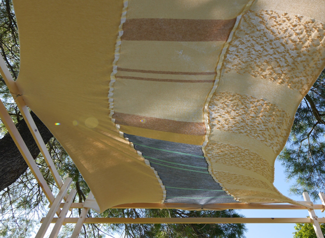
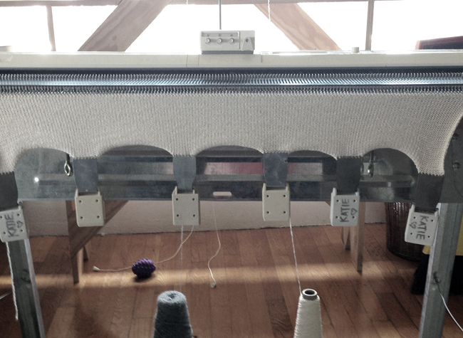

- 
- 
Katryn McIntosh is an artist and digital strategist living in Providence, RI. She develops systems, in both her artwork and her career, that integrate disparate parts to produce a faceted yet cohesive whole. Technology and textiles remain her preferred mediums, but her body of work is more readily defined by a consistent approach than a particular product.

Katryn received her BFA in painting from the Rhode Island School of Design in 2007. While at RISD, she participated in the European Honors program – a year of independent study in Rome, Italy. Before focusing on technology, Katryn pursued a brief career in the fashion industry that enriched her sense of color and streamlined her approach to production and business.
She is also particularly passionate about working with organizations that encourage young women who have an interest in leadership or the STEM fields. In early April 2014, she volunteered for New England Give Camp. In collaboration with three other technology professionals, she built a new Web site for Girls, Inc of Greater Lowell over the course of a weekend. She continues to work with them on the design of their Web site and communication materials.